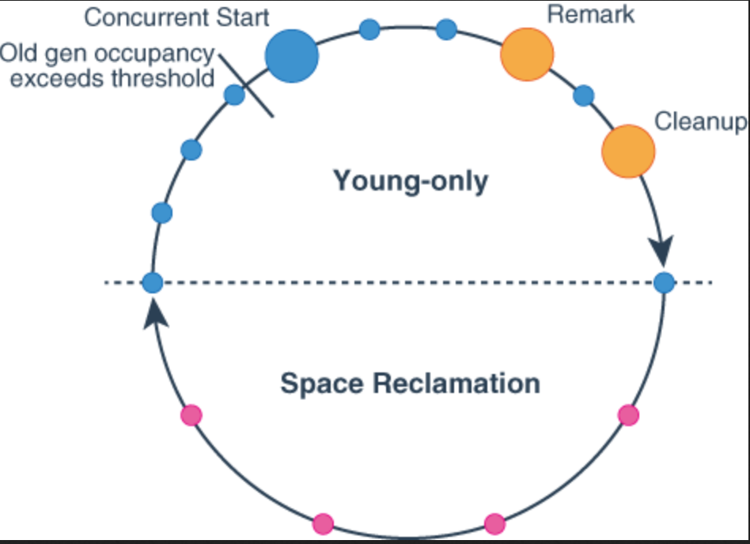
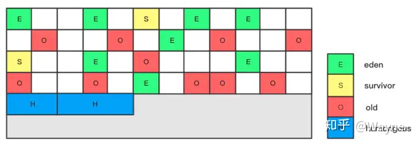
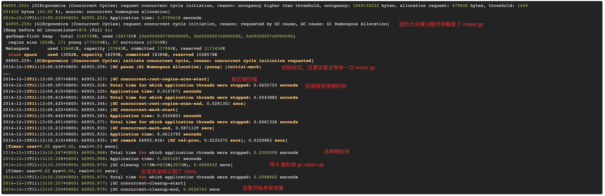
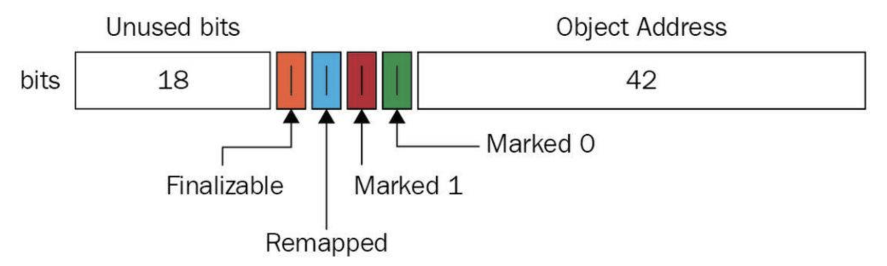

<!DOCTYPE html>
<html>
<head><meta name="generator" content="Hexo 3.9.0">
  <meta charset="utf-8">
  
  <title>现代垃圾收集器 | 守株阁</title>
  <meta name="viewport" content="width=device-width, initial-scale=1, maximum-scale=1">
  <meta name="description" content="所有的垃圾收集器，都基于弱分代假设。实际的垃圾回收效率取决于堆内对象的分布状况。垃圾回收并不能解决内存泄漏或者应用程序逻辑的不良分配习惯问题，要处理 JVM 内存回收问题的根本方法是对程序进行调优：  减少临时对象，尽量复用内存 使用对象池 主动提前释放对象 主动 gc  其他情况，可以通过 tuning garbage collector 来解决。 CMSCMS 的垃圾收集器默认在新生代就使用">
<meta name="keywords" content="JVM,Java">
<meta property="og:type" content="article">
<meta property="og:title" content="现代垃圾收集器">
<meta property="og:url" content="http://yoursite.com/2020/09/27/现代垃圾收集器/index.html">
<meta property="og:site_name" content="守株阁">
<meta property="og:description" content="所有的垃圾收集器，都基于弱分代假设。实际的垃圾回收效率取决于堆内对象的分布状况。垃圾回收并不能解决内存泄漏或者应用程序逻辑的不良分配习惯问题，要处理 JVM 内存回收问题的根本方法是对程序进行调优：  减少临时对象，尽量复用内存 使用对象池 主动提前释放对象 主动 gc  其他情况，可以通过 tuning garbage collector 来解决。 CMSCMS 的垃圾收集器默认在新生代就使用">
<meta property="og:locale" content="zh-Hans">
<meta property="og:image" content="http://yoursite.com/2020/09/27/现代垃圾收集器/g1-gc-cycle.png">
<meta property="og:image" content="http://yoursite.com/2020/09/27/现代垃圾收集器/g1-regions.jpg">
<meta property="og:image" content="http://yoursite.com/2020/09/27/现代垃圾收集器/global-concurrent-marking.png">
<meta property="og:image" content="http://yoursite.com/2020/09/27/现代垃圾收集器/zgc%20过程.png">
<meta property="og:image" content="http://yoursite.com/2020/09/27/现代垃圾收集器/zgc%20的%2064%20位地址空间.png">
<meta property="og:image" content="http://yoursite.com/2020/09/27/现代垃圾收集器/着色指针.png">
<meta property="og:image" content="http://yoursite.com/2020/09/27/现代垃圾收集器/zgc%20并发标记示范.png">
<meta property="og:image" content="http://yoursite.com/2020/09/27/现代垃圾收集器/zgc%20日志举例.png">
<meta property="og:image" content="http://yoursite.com/2020/09/27/现代垃圾收集器/Garbage%20Collector.png">
<meta property="og:updated_time" content="2021-04-19T13:49:00.400Z">
<meta name="twitter:card" content="summary">
<meta name="twitter:title" content="现代垃圾收集器">
<meta name="twitter:description" content="所有的垃圾收集器，都基于弱分代假设。实际的垃圾回收效率取决于堆内对象的分布状况。垃圾回收并不能解决内存泄漏或者应用程序逻辑的不良分配习惯问题，要处理 JVM 内存回收问题的根本方法是对程序进行调优：  减少临时对象，尽量复用内存 使用对象池 主动提前释放对象 主动 gc  其他情况，可以通过 tuning garbage collector 来解决。 CMSCMS 的垃圾收集器默认在新生代就使用">
<meta name="twitter:image" content="http://yoursite.com/2020/09/27/现代垃圾收集器/g1-gc-cycle.png">
  
    <link rel="alternate" href="/atom.xml" title="守株阁" type="application/atom+xml">
  
  
    <link rel="icon" href="/favicon.png">
  
  
  <link rel="stylesheet" href="/css/style.css">
  

<link rel="stylesheet" href="/css/prism.css" type="text/css">
<link rel="stylesheet" href="/css/prism-line-numbers.css" type="text/css"></head>
</html>
<body>
  <div id="container">
    <div id="wrap">
      <header id="header">
  <div id="banner"></div>
  <div id="header-outer" class="outer">
    
    <div id="header-inner" class="inner">
      <nav id="sub-nav">
        
          <a id="nav-rss-link" class="nav-icon" href="/atom.xml" title="RSS Feed"></a>
        
        <a id="nav-search-btn" class="nav-icon" title="搜索"></a>
      </nav>
      <div id="search-form-wrap">
        <form action="//google.com/search" method="get" accept-charset="UTF-8" class="search-form"><input type="search" name="q" class="search-form-input" placeholder="Search"><button type="submit" class="search-form-submit">&#xF002;</button><input type="hidden" name="sitesearch" value="http://yoursite.com"></form>
      </div>
      <nav id="main-nav">
        <a id="main-nav-toggle" class="nav-icon"></a>
        
          <a class="main-nav-link" href="/">首页</a>
        
          <a class="main-nav-link" href="/archives">归档</a>
        
          <a class="main-nav-link" href="/about">关于</a>
        
      </nav>
      
    </div>
    <div id="header-title" class="inner">
      <h1 id="logo-wrap">
        <a href="/" id="logo">守株阁</a>
      </h1>
      
        <h2 id="subtitle-wrap">
          <a href="/" id="subtitle">一切都是守株待兔，如切如磋，如琢如磨。I am just joking.</a>
        </h2>
      
    </div>
  </div>
</header>
      <div class="outer">
        <section id="main"><article id="post-现代垃圾收集器" class="article article-type-post" itemscope itemprop="blogPost">
  <div class="article-meta">
    <a href="/2020/09/27/现代垃圾收集器/" class="article-date">
  <time datetime="2020-09-27T08:12:22.000Z" itemprop="datePublished">2020-09-27</time>
</a>
    
  </div>
  <div class="article-inner">
    
    
      <header class="article-header">
        
  
    <h1 class="article-title" itemprop="name">
      现代垃圾收集器
    </h1>
  

      </header>
    
    <div class="article-entry" itemprop="articleBody">
      
        <!-- Table of Contents -->
        
        <p>所有的垃圾收集器，都基于<a href="https://www.ps.uni-saarland.de/courses/gc-ws01/slides/generational_gc.pdf" target="_blank" rel="noopener">弱分代假设</a>。实际的垃圾回收效率取决于堆内对象的分布状况。垃圾回收并不能解决内存泄漏或者应用程序逻辑的不良分配习惯问题，要处理 JVM 内存回收问题的根本方法是对程序进行调优：</p>
<ul>
<li>减少临时对象，尽量复用内存</li>
<li>使用对象池</li>
<li>主动提前释放对象</li>
<li>主动 gc</li>
</ul>
<p>其他情况，可以通过 tuning garbage collector 来解决。</p>
<h1 id="CMS"><a href="#CMS" class="headerlink" title="CMS"></a>CMS</h1><p>CMS 的垃圾收集器默认在新生代就使用 ParNew，ParNew 天然是个 STW 收集器。</p>
<p>ParNew 使用标记-复制算法。标记-复制算法可以分为三个阶段：</p>
<ul>
<li>标记阶段，即从GC Roots集合开始，标记活跃对象；</li>
<li>转移阶段，即把活跃对象复制到新的内存地址上；</li>
<li>重定位阶段，因为转移导致对象的地址发生了变化，在重定位阶段，所有指向对象旧地址的指针都要调整到对象新的地址上。</li>
</ul>
<p>CMS 是个并发收集器。其操作步骤包括：</p>
<ul>
<li>初始标记</li>
<li>并发标记</li>
<li>再标记</li>
<li>并发收集</li>
</ul>
<p><a href="https://openjdk.java.net/jeps/363" target="_blank" rel="noopener">CMS 将在 Java 14 中被 removed 掉</a>。</p>
<h1 id="G1"><a href="#G1" class="headerlink" title="G1"></a>G1</h1><p>老的垃圾收集器总是面临几个问题：</p>
<ul>
<li>所有针对老年代的操作必须扫描整个老年代空间；</li>
<li>年轻地和老年代是独立的连续的内存块，必须先决定年轻代和老年代在虚拟地址空间的位置。</li>
</ul>
<p>G1是一种服务端应用使用的垃圾收集器，目标是用在多核、大内存的机器上，它在大多数情况下可以实现指定的GC暂停时间（因为它引入了更好的停顿预测模型），同时还能保持较高的吞吐量。</p>
<p>G1的缺点是：停顿预测模型还不够智能；即使使用了 pre-write barrier 和 post-write barrier。 并发标记的准确度不够高，所以需要重标记，甚至依然有 concurrent mode 失败的场景。</p>
<p>G1 在发送垃圾回收的前后，各种 region 的配比会变化，比如：Eden: 3072.0K(194.0M)-&gt;0.0B(201.0M) 显示垃圾回收后，有 7mb 的 region 增加给了 eden 区。如果不指定 region，则 G1 会根据实际可用的机器内存大小来决定 region，尽量达到 2048 region。</p>
<h2 id="G1-phases"><a href="#G1-phases" class="headerlink" title="G1 phases"></a>G1 phases</h2><p><br>其中：</p>
<ul>
<li>蓝色 Young-only</li>
<li>黄色 标记过程的停顿</li>
<li>红色 Mixed gc 停顿</li>
</ul>
<h2 id="G1-region"><a href="#G1-region" class="headerlink" title="G1 region"></a>G1 region</h2><p></p>
<p>关于 gc 日志可以参考<a href="https://dzone.com/articles/understanding-g1-gc-log-format" target="_blank" rel="noopener">《Understanding G1 GC Log Format》</a>。</p>
<p>在 jvm 里，minor gc 是一种 minor gc event。</p>
<h2 id="minor-gc-的日志"><a href="#minor-gc-的日志" class="headerlink" title="minor gc 的日志"></a>minor gc 的日志</h2><blockquote>
<p>发生在年轻代的GC算法，一般对象（除了巨型对象）都是在eden region中分配内存，当所有eden<br>region被耗尽无法申请内存时，就会触发一次young gc，这种触发机制和之前的young gc差不多，执行完一次young<br>gc，活跃对象会被拷贝到survivor region或者晋升到old<br>region中，空闲的region会被放入空闲列表中，等待下次被使用。</p>
</blockquote>
<p>ParallelTime 到 Eden 就是 PrintGCDetails 的结果。</p>
<p>一般 8 核的 cpu，就会产生 8 个<strong>并行 gc worker 线程</strong>。</p>
<p>从这个图我们也可以看出，如果让 g1 自己选择 region 里面新老分布的比例的话，（通常）young 会多小（在一个 4g 的堆上，可能只有 200m 的年轻代），g1 的年轻代往往会有一个自动扩容的过程。如果 gc 时间不到 10ms，real 都显示不出来。</p>
<h2 id="global-concurrent-marking-的日志"><a href="#global-concurrent-marking-的日志" class="headerlink" title="global concurrent marking 的日志"></a>global concurrent marking 的日志</h2><p>InitiatingHeapOccupancyPercent 到了是最容易触发触发并发收集的。</p>
<p>Percentage of the (entire) heap occupancy to start a concurrent GC cycle. GCs that trigger a concurrent GC cycle based on the occupancy of the entire heap and not just one of the generations, including G1, use this option. A value of 0 denotes ‘do constant GC cycles’. The default value is 45.</p>
<p>但实际上我们在实践中发现，8g 的堆，y 区到了 4g 的满状态，也只是触发 ygc，而不是 mixed gc。</p>
<p></p>
<p>现实中的 Concurrent Cycles 往往会执行一轮又一轮，直到内存空间的比例降到足够低的水位为止。</p>
<p>搜索 GC pause 可以看到各种各样的 gc 停顿。要找混合垃圾回收直接搜“mixed GCs”或者“(G1 Evacuation Pause) (mixed)”。</p>
<p>一般的 gc 日志的顺序是“[GC pause (G1 Evacuation Pause) (young)” -&gt; “concurrent-root-region-scan-start” -&gt; “Concurrent Cycles” -&gt; “ [GC pause (G1 Evacuation Pause) (young)” -&gt; “[G1Ergonomics (Mixed GCs) start mixed GCs” -&gt;“(G1 Evacuation Pause) (mixed)”（这一步会循环执行）。</p>
<p>每次 gc 开始时，Heap before GC invocations=15872 (full 0)，其中invocations=15872是自JVM启动以来，执行GC的次数。每一次 initial-mark，这个值就会加 1。</p>
<h2 id="可中断的-mixedgc"><a href="#可中断的-mixedgc" class="headerlink" title="可中断的 mixedgc"></a>可中断的 mixedgc</h2><blockquote>
<p>一旦收集器确定了 GC 回收集 并且 GC 回收、整理工作已经开始，这个过程是without stopping的，即 G1<br>收集器必须完成收集集合的所有区域中的所有活动对象之后才能停止；但是如果收集器选择过大的 GC<br>回收集，此时的STW时间会过长超出目标pause time。</p>
<p>这种情况在mixed collections时候比较明显。这个特性启动了一个机制，当选择了一个比较大的collection<br>set，Java12 中将把 GC 回收集（混合收集集合）拆分为mandatory（必需或强制）及optional两部分(<br>当完mandatory的部分，如果还有剩余时间则会去处理optional部分)来将mixed collections从without<br>stopping变为abortable，以更好满足指定pause time的目标。</p>
<p>其中必需处理的部分包括 G1 垃圾收集器不能递增处理的 GC 回收集的部分（如：年轻代），同时也可以包含老年代以提高处理效率。</p>
<p>将 GC 回收集拆分为必需和可选部分时，垃圾收集过程优先处理必需部分。同时，需要为可选 GC 回收集部分维护一些其他数据，这会产生轻微的<br>CPU 开销，但小于 1 ％的变化，同时在 G1 回收器处理 GC 回收集期间，本机内存使用率也可能会增加，使用上述情况只适用于包含可选<br>GC 回收部分的 GC 混合回收集合。</p>
</blockquote>
<p>参考：</p>
<ol>
<li><a href="https://www.cnblogs.com/androidsuperman/p/11742876.html" target="_blank" rel="noopener">《Java12新特性 – 可中断的 G1 Mixed GC》</a></li>
</ol>
<h2 id="full-gc"><a href="#full-gc" class="headerlink" title="full gc"></a>full gc</h2><p>Full GC (Allocation Failure) 是最常见的 fgc 的原因。</p>
<h2 id="常用的-jvm-配置"><a href="#常用的-jvm-配置" class="headerlink" title="常用的 jvm 配置"></a>常用的 jvm 配置</h2><pre class="line-numbers language-bash"><code class="language-bash"><span class="token comment" spellcheck="true">#jvm arg</span>
-server -Dfile.encoding<span class="token operator">=</span>UTF-8 -Dsun.jnu.encoding<span class="token operator">=</span>UTF-8 -Djava.io.tmpdir<span class="token operator">=</span>/tmp -Djava.net.preferIPv6Addresses<span class="token operator">=</span>false -Duser.timezone<span class="token operator">=</span>GMT+08

<span class="token comment" spellcheck="true"># jvm gc</span>
-XX:+AlwaysPreTouch -XX:CICompilerCount<span class="token operator">=</span>4 -XX:ErrorFile<span class="token operator">=</span>/var/company/logs/com.company.application/vmerr.log.20200928 -XX:G1HeapRegionSize<span class="token operator">=</span>4194304 -XX:GCLogFileSize<span class="token operator">=</span>10485760 -XX:+HeapDumpOnOutOfMemoryError -XX:HeapDum      pPath<span class="token operator">=</span>/var/company/logs/com.company.application/heaperr.log.20200928 -XX:InitialHeapSize<span class="token operator">=</span>4294967296 -XX:Init      iatingHeapOccupancyPercent<span class="token operator">=</span>40 -XX:MaxGCPauseMillis<span class="token operator">=</span>100 -XX:MaxHeapSize<span class="token operator">=</span>4294967296 -XX:MaxMetaspaceSize<span class="token operator">=</span>536870912 -XX:MetaspaceSize<span class="token operator">=</span>536870912 -XX:NumberOfGCLogFiles<span class="token operator">=</span>10 -XX:+PrintAdaptiveSizePolicy -XX:+PrintFlagsFinal -XX:+PrintGC -XX:+PrintGCApplicationS      toppedTime -XX:+PrintGCDateStamps -XX:+PrintGCDetails -XX:+PrintGCTimeStamps -XX:+PrintHeapAtGC -XX:+PrintStringTableStatistics       -XX:+PrintTenuringDistribution -XX:ThreadStackSize<span class="token operator">=</span>512 -XX:+TieredCompilation -XX:-UseBiasedLocking -XX:+UseCompressedClassPointers -XX:+UseCompressedOops -XX:+UseG1GC -XX:-UseGCLogFileRotation

<span class="token comment" spellcheck="true"># jvm heap</span>
-Xss512k -Xmx<span class="token variable"><span class="token variable">$(</span>实际内存/2<span class="token variable">)</span></span>m -Xms<span class="token variable"><span class="token variable">$(</span>实际内存/2<span class="token variable">)</span></span>m -XX:MetaspaceSize<span class="token operator">=</span><span class="token variable"><span class="token variable">$(</span>实际内存/16<span class="token variable">)</span></span>m -XX:MaxMetaspaceSize<span class="token operator">=</span><span class="token variable"><span class="token variable">$(</span>实际内存/16<span class="token variable">)</span></span>m -XX:+AlwaysPreTouch -XX:+HeapDumpOnOutOfMemoryError
<span aria-hidden="true" class="line-numbers-rows"><span></span><span></span><span></span><span></span><span></span><span></span><span></span><span></span></span></code></pre>
<p>参考：</p>
<ol>
<li><a href="https://zhuanlan.zhihu.com/p/161427950" target="_blank" rel="noopener">《G1从入门到放弃》</a></li>
<li><a href="https://zhuanlan.zhihu.com/p/54048685" target="_blank" rel="noopener">《可能是最全面的G1学习笔记》</a></li>
<li>g1 的 gc 日志可以看<a href="https://blogs.oracle.com/poonam/understanding-g1-gc-logs" target="_blank" rel="noopener">《Understanding G1 GC Logs》</a>。</li>
<li><a href="https://tech.meituan.com/2016/09/23/g1.html" target="_blank" rel="noopener">《Java Hotspot G1 GC的一些关键技术》</a></li>
</ol>
<h1 id="ZGC"><a href="#ZGC" class="headerlink" title="ZGC"></a>ZGC</h1><blockquote>
<p>ZGC（The Z Garbage Collector）是JDK 11中推出的一款低延迟垃圾回收器，它的设计目标包括：</p>
<ul>
<li>停顿时间不超过10ms；</li>
<li>停顿时间不会随着堆的大小，或者活跃对象的大小而增加；</li>
<li>支持8MB~4TB级别的堆（未来支持16TB）。</li>
</ul>
<p>与CMS中的ParNew和G1类似，ZGC也采用标记-复制算法，不过ZGC对该算法做了重大改进：ZGC在标记、转移和重定位阶段几乎都是并发的，这是ZGC实现停顿时间小于10ms目标的最关键原因。</p>
</blockquote>
<p></p>
<blockquote>
<p>ZGC只有三个STW阶段：初始标记，再标记，初始转移。其中，初始标记和初始转移分别都只需要扫描所有GC Roots，其处理时间和GC<br>Roots的数量成正比，一般情况耗时非常短；再标记阶段STW时间很短，最多1ms，超过1ms则再次进入并发标记阶段。即，ZGC几乎所有暂停都只依赖于GC<br>Roots集合大小，停顿时间不会随着堆的大小或者活跃对象的大小而增加。与ZGC对比，G1的转移阶段完全STW的，且停顿时间随存活对象的大小增加而增加。</p>
<p>ZGC通过着色指针和读屏障技术，解决了转移过程中准确访问对象的问题，实现了并发转移。大致原理描述如下：并发转移中“并发”意味着GC线程在转移对象的过程中，应用线程也在不停地访问对象。假设对象发生转移，但对象地址未及时更新，那么应用线程可能访问到旧地址，从而造成错误。而在ZGC中，应用线程访问对象将触发“读屏障”，如果发现对象被移动了，那么“读屏障”会把读出来的指针更新到对象的新地址上，这样应用线程始终访问的都是对象的新地址。那么，JVM是如何判断对象被移动过呢？就是利用对象引用的地址，即着色指针。下面介绍着色指针和读屏障技术细节。</p>
</blockquote>
<h2 id="着色指针"><a href="#着色指针" class="headerlink" title="着色指针"></a>着色指针</h2><p></p>
<blockquote>
<p>其中，[0~4TB) 对应Java堆，[4TB ~ 8TB) 称为M0地址空间，[8TB ~ 12TB) 称为M1地址空间，[12TB ~<br>16TB) 预留未使用，[16TB ~ 20TB) 称为Remapped空间。</p>
<p>当应用程序创建对象时，首先在堆空间申请一个虚拟地址，但该虚拟地址并不会映射到真正的物理地址。ZGC同时会为该对象在M0、M1和Remapped地址空间分别申请一个虚拟地址，且这三个虚拟地址对应同一个物理地址，但这三个空间在同一时间有且只有一个空间有效。ZGC之所以设置三个虚拟地址空间，是因为它使用“空间换时间”思想，去降低GC停顿时间。“空间换时间”中的空间是虚拟空间，而不是真正的物理空间。后续章节将详细介绍这三个空间的切换过程。</p>
<p>与上述地址空间划分相对应，ZGC实际仅使用64位地址空间的第0~41位，而第42~45位存储元数据，第47~63位固定为0。</p>
</blockquote>
<p></p>
<blockquote>
<p>ZGC将对象存活信息存储在42~45位中，这与传统的垃圾回收并将对象存活信息放在对象头中完全不同。</p>
</blockquote>
<h2 id="读屏障"><a href="#读屏障" class="headerlink" title="读屏障"></a>读屏障</h2><blockquote>
<p>读屏障是JVM向应用代码插入一小段代码的技术。当应用线程从堆中读取对象引用时，就会执行这段代码。需要注意的是，仅“从堆中读取对象引用”才会触发这段代码。</p>
</blockquote>
<pre class="line-numbers language-java"><code class="language-java">Object o <span class="token operator">=</span> obj<span class="token punctuation">.</span>FieldA   <span class="token comment" spellcheck="true">// 从堆中读取引用，需要加入屏障</span>
<span class="token operator">&lt;</span>Load barrier<span class="token operator">></span>
Object p <span class="token operator">=</span> o  <span class="token comment" spellcheck="true">// 无需加入屏障，因为不是从堆中读取引用</span>
o<span class="token punctuation">.</span><span class="token function">dosomething</span><span class="token punctuation">(</span><span class="token punctuation">)</span> <span class="token comment" spellcheck="true">// 无需加入屏障，因为不是从堆中读取引用</span>
<span class="token keyword">int</span> i <span class="token operator">=</span>  obj<span class="token punctuation">.</span>FieldB  <span class="token comment" spellcheck="true">//无需加入屏障，因为不是对象引用</span>
<span aria-hidden="true" class="line-numbers-rows"><span></span><span></span><span></span><span></span><span></span></span></code></pre>
<blockquote>
<p>ZGC中读屏障的代码作用：在对象标记和转移过程中，用于确定对象的引用地址是否满足条件，并作出相应动作。</p>
</blockquote>
<h2 id="ZGC并发处理演示"><a href="#ZGC并发处理演示" class="headerlink" title="ZGC并发处理演示"></a>ZGC并发处理演示</h2><blockquote>
<p>接下来详细介绍ZGC一次垃圾回收周期中地址视图的切换过程：</p>
<ul>
<li>初始化：ZGC初始化之后，整个内存空间的地址视图被设置为Remapped。程序正常运行，在内存中分配对象，满足一定条件后垃圾回收启动，此时进入标记阶段。</li>
<li>并发标记阶段：第一次进入标记阶段时视图为M0，如果对象被GC标记线程或者应用线程访问过，那么就将对象的地址视图从Remapped调整为M0。所以，在标记阶段结束之后，对象的地址要么是M0视图，要么是Remapped。如果对象的地址是M0视图，那么说明对象是活跃的；如果对象的地址是Remapped视图，说明对象是不活跃的。</li>
<li>并发转移阶段：标记结束后就进入转移阶段，此时地址视图再次被设置为Remapped。如果对象被GC转移线程或者应用线程访问过，那么就将对象的地址视图从M0调整为Remapped。</li>
</ul>
<p>其实，在标记阶段存在两个地址视图M0和M1，上面的过程显示只用了一个地址视图。之所以设计成两个，是为了区别前一次标记和当前标记。也即，第二次进入并发标记阶段后，地址视图调整为M1，而非M0。</p>
<p>着色指针和读屏障技术不仅应用在并发转移阶段，还应用在并发标记阶段：将对象设置为已标记，传统的垃圾回收器需要进行一次内存访问，并将对象存活信息放在对象头中；而在ZGC中，只需要设置指针地址的第42~45位即可，并且因为是寄存器访问，所以速度比访问内存更快。</p>
</blockquote>
<p>注意可能会有多轮并发标记。</p>
<p></p>
<p>这个图里的 0 和 1 属于同一个内存页面，因为 0 是活跃对象，所以 0 被转移出来，而 1 和整个页面都被回收了。</p>
<p>并发标记和并发转移是对称操作，从对象的稳定状态都应该是 remmaped 态。</p>
<h2 id="常用的-jvm-配置-1"><a href="#常用的-jvm-配置-1" class="headerlink" title="常用的 jvm 配置"></a>常用的 jvm 配置</h2><pre class="line-numbers language-bash"><code class="language-bash">-Xms10G -Xmx10G 
-XX:ReservedCodeCacheSize<span class="token operator">=</span>256m -XX:InitialCodeCacheSize<span class="token operator">=</span>256m 
-XX:+UnlockExperimentalVMOptions -XX:+UseZGC 
-XX:ConcGCThreads<span class="token operator">=</span>2 -XX:ParallelGCThreads<span class="token operator">=</span>6 
-XX:ZCollectionInterval<span class="token operator">=</span>120 -XX:ZAllocationSpikeTolerance<span class="token operator">=</span>5 
-XX:+UnlockDiagnosticVMOptions -XX:-ZProactive 
-Xlog:safepoint,classhisto*<span class="token operator">=</span>trace,age*,gc*<span class="token operator">=</span>info:file<span class="token operator">=</span>/opt/logs/logs/gc-%t.log:time,tid,tags:filecount<span class="token operator">=</span>5,filesize<span class="token operator">=</span>50m 
<span aria-hidden="true" class="line-numbers-rows"><span></span><span></span><span></span><span></span><span></span><span></span><span></span></span></code></pre>
<blockquote>
<p>-Xms -Xmx：堆的最大内存和最小内存，这里都设置为10G，程序的堆内存将保持10G不变。 -XX:ReservedCodeCacheSize -XX:InitialCodeCacheSize：设置CodeCache的大小， JIT编译的代码都放在CodeCache中，一般服务64m或128m就已经足够。我们的服务因为有一定特殊性，所以设置的较大，后面会详细介绍。<br>-XX:+UnlockExperimentalVMOptions -XX:+UseZGC：启用ZGC的配置。 -XX:ConcGCThreads：并发回收垃圾的线程。默认是总核数的12.5%，8核CPU默认是1。调大后GC变快，但会占用程序运行时的CPU资源，吞吐会受到影响。<br>-XX:ParallelGCThreads：STW阶段使用线程数，默认是总核数的60%。 -XX:ZCollectionInterval：ZGC发生的最小时间间隔，单位秒。 -XX:ZAllocationSpikeTolerance：ZGC触发自适应算法的修正系数，默认2，数值越大，越早的触发ZGC。 -XX:+UnlockDiagnosticVMOptions -XX:-ZProactive：是否启用主动回收，默认开启，这里的配置表示关闭。 -Xlog：设置GC日志中的内容、格式、位置以及每个日志的大小。</p>
</blockquote>
<h2 id="理解ZGC触发时机"><a href="#理解ZGC触发时机" class="headerlink" title="理解ZGC触发时机"></a>理解ZGC触发时机</h2><p>相比于CMS和G1的GC触发机制，ZGC的GC触发机制有很大不同。ZGC的核心特点是并发，GC过程中一直有新的对象产生。如何保证在GC完成之前，新产生的对象不会将堆占满，是ZGC参数调优的第一大目标。因为在ZGC中，当垃圾来不及回收将堆占满时，会导致正在运行的线程停顿，持续时间可能长达秒级之久。</p>
<p>ZGC有多种GC触发机制，总结如下：</p>
<ul>
<li>阻塞内存分配请求触发：当垃圾来不及回收，垃圾将堆占满时，会导致部分线程阻塞。我们应当避免出现这种触发方式。日志中关键字是“Allocation Stall”。</li>
<li>基于分配速率的自适应算法：最主要的GC触发方式，其算法原理可简单描述为”ZGC根据近期的对象分配速率以及GC时间，计算出当内存占用达到什么阈值时触发下一次GC”。自适应算法的详细理论可参考彭成寒《新一代垃圾回收器ZGC设计与实现》一书中的内容。通过ZAllocationSpikeTolerance参数控制阈值大小，该参数默认2，数值越大，越早的触发GC。我们通过调整此参数解决了一些问题。日志中关键字是“Allocation Rate”。</li>
<li>基于固定时间间隔：通过ZCollectionInterval控制，适合应对突增流量场景。流量平稳变化时，自适应算法可能在堆使用率达到95%以上才触发GC。流量突增时，自适应算法触发的时机可能会过晚，导致部分线程阻塞。我们通过调整此参数解决流量突增场景的问题，比如定时活动、秒杀等场景。日志中关键字是“Timer”。</li>
<li>主动触发规则：类似于固定间隔规则，但时间间隔不固定，是ZGC自行算出来的时机，我们的服务因为已经加了基于固定时间间隔的触发机制，所以通过-ZProactive参数将该功能关闭，以免GC频繁，影响服务可用性。 日志中关键字是“Proactive”。</li>
<li>预热规则：服务刚启动时出现，一般不需要关注。日志中关键字是“Warmup”。</li>
<li>外部触发：代码中显式调用System.gc()触发。日志中关键字是“System.gc()”。</li>
<li>元数据分配触发：元数据区不足时导致，一般不需要关注。 日志中关键字是“Metadata GC Threshold”。</li>
</ul>
<h2 id="理解ZGC日志"><a href="#理解ZGC日志" class="headerlink" title="理解ZGC日志"></a>理解ZGC日志</h2><blockquote>
<p>一次完整的GC过程，需要注意的点已在图中标出。</p>
</blockquote>
<p></p>
<blockquote>
<p>注意：该日志过滤了进入安全点的信息。正常情况，在一次GC过程中还穿插着进入安全点的操作。</p>
<p>GC日志中每一行都注明了GC过程中的信息，关键信息如下：</p>
<ul>
<li>Start：开始GC，并标明的GC触发的原因。上图中触发原因是自适应算法。</li>
<li>Phase-Pause Mark Start：初始标记，会STW。</li>
<li>Phase-Pause Mark End：再次标记，会STW。</li>
<li>Phase-Pause Relocate Start：初始转移，会STW。</li>
<li>Heap 信息：记录了GC过程中Mark、Relocate前后的堆大小变化状况。High和Low记录了其中的最大值和最小值，我们一般关注High中Used的值，如果达到100%，在GC过程中一定存在内存分配不足的情况，需要调整GC的触发时机，更早或者更快地进行GC。</li>
<li>GC 信息统计：可以定时的打印垃圾收集信息，观察10秒内、10分钟内、10个小时内，从启动到现在的所有统计信息。利用这些统计信息，可以排查定位一些异常点。</li>
</ul>
</blockquote>
<p>!(zgc-日志举例 2.png)[zgc-日志举例 2.png]</p>
<h2 id="理解-ZGC-停顿原因"><a href="#理解-ZGC-停顿原因" class="headerlink" title="理解 ZGC 停顿原因"></a>理解 ZGC 停顿原因</h2><ul>
<li>GC时，初始标记：日志中Pause Mark Start。</li>
<li>GC时，再标记：日志中Pause Mark End。</li>
<li>GC时，初始转移：日志中Pause Relocate Start。</li>
<li>内存分配阻塞：当内存不足时线程会阻塞等待GC完成，关键字是”Allocation Stall”。</li>
<li>安全点：所有线程进入到安全点后才能进行GC，ZGC定期进入安全点判断是否需要GC。先进入安全点的线程需要等待后进入安全点的线程直到所有线程挂起。</li>
<li>dump线程、内存：比如jstack、jmap命令。</li>
</ul>
<p>这 6 种 STW，在其他垃圾收集器里也是很常见的。</p>
<h1 id="总结"><a href="#总结" class="headerlink" title="总结"></a>总结</h1><p><a href="Garbage Collector.xmind">Garbage Collector.xmind</a></p>
<p></p>
<p>关于 cms 和 g1 的深入讨论，参考<a href="https://hllvm-group.iteye.com/group/topic/44381" target="_blank" rel="noopener">这个帖子</a>。</p>
<h1 id="调优经验"><a href="#调优经验" class="headerlink" title="调优经验"></a>调优经验</h1><p>在现代系统中，系统进入峰值时，峰值效应明显，要针对 peak server workloads 做好准备。 通常 ygc 始终是全 stw 的，fullgc 也不可避免的有好几个 stw 阶段。</p>
<p>指定堆的大小是为了保证垃圾回收的可预测性，也能进而保证堆扩展（heap expansion）不出错-在混布（mixed deployment）时保障资源有界。</p>
<p>指定最大停顿时间则意味着我们要指定系统在 high probability（90%的情况下）应该达到的一个软实时目标。PS 和 G1 都支持这种调优策略，而且能够自动适应调整堆内部大小。PS 是吞吐量收集器，G1 是 regionalized, parallel-concurrent, incremental garbage collector。PS 和 G1 的低延迟垃圾收集器。cms 可以被认为是一个并发收集器，而 g1 的 ygc 和 mixedgc 可以被认为都是 stw 的- mixed gc 的并发标记阶段是可以并发执行的。</p>
<p>对于有并发阶段存在的垃圾收集器而言，InitiatingHeapOccupancyPercent（全堆）/CMSInitiatingOccupancyFraction（老年代，需配合 CMSInitiatingOccupancyOnly 使用，否则只生效一次 ）等阈值保证了系统可以提前触发回收，这样可以保证并发收集留有余地，不至于有并发模式失败。</p>
<p>如果配置了-XX:MetaspaceSize，那么触发FGC的阈值就是配置的值；MaxMetaspaceSize 指的是元空间最大的大小-如果不设置则为无限大。参考<a href="https://www.jianshu.com/p/b448c21d2e71" target="_blank" rel="noopener">《JVM参数MetaspaceSize的误解》</a>。</p>
<p>gc 日志中的 Allocation Failure 可能代表 y 区内存分配失败，也可能代表 old 区内存分配失败。实际上，内存分配失败、回收后空间水位过高、经常越过高水位，都是持续发生 gc 的元凶，它们通常都由 gc 不友好、内存泄漏的代码导致。</p>
<p>ygc 有意想不到的直接晋升到 old 区的几种可能，所以 old 区通常要设计得比 y 区大：ygc 剩余垃圾大于 eden，触发担保机制；大对象；动态年龄判断。如果 old 区很稳定，可以证明应用的对象朝生夕死分布得很好。单纯的年龄阈值并不一定能够适应复杂的 ygc 的年龄分布，所以 MaxTenuringThreshold 会和 TargetSurvivorRatio 一起使用，如果 ygc 的结果超出了 desired_survivor_size，也会触发老年代晋升。</p>
<p>看待 gc 时间需要客观：ygc 的时间总是会造成 stw 的停顿。如果设定了很小的 gc 时间目标，则 jvm 可能很保守地制造小堆，进而在数据密集型应用上触发频繁的垃圾回收，进而是总的停顿时间变大。有时候稍微大的堆（在 8g 机器上使用 2-4g 的年轻代）或者稍微大的停顿时间目标 100 ms 可以解决我们的问题。否则，我们只能通过压测，不断调节年轻代的大小来解决我们的问题。</p>
<p>垃圾调优一定要解决确定存在的问题-而不能解决不存在的问题。如果需要调优 cpu，则注意垃圾收集器、标记线程、回收线程和垃圾回收的频次。调优年轻代的时候是有代价的：更大的年轻代意味着更低的回收频率（这通常会优化次数相关的告警），但会带来更大的 ygc meantime，也意味着进入老年代的时间更缓慢，但老年代的大小会变小，可能又会导致老年代的 fgc（这又取决于老年代是不是稳定的）。</p>
<p>cms/g1 都使用了三色标记算法，白色（未被扫描）、灰色（field 未被扫描）、黑色（已全被扫描）三种对象里面，灰色对象和白色对象的引用交替增删，可能造成部分白色对象不被回收，这就是这类垃圾收集器的浮动垃圾的根源。</p>
<p>card 和 rset 本身都是帮助 gc 的过程工具，一个 point-out，一个 point-in。都是用空间换时间。g1 的停顿预测模型是以衰减标准偏差为理论基础。扫描 dirty_card 的时间，会占据预测停顿时间的一部分。</p>
<p>参考：</p>
<ol>
<li><a href="https://tech.meituan.com/2020/08/06/new-zgc-practice-in-meituan.html" target="_blank" rel="noopener">《新一代垃圾回收器ZGC的探索与实践》</a></li>
</ol>

      
    </div>
    <footer class="article-footer">
      <a data-url="http://yoursite.com/2020/09/27/现代垃圾收集器/" data-id="cknonmugv00curaa1x4f79k78" class="article-share-link">分享</a>
      
      
      
  <ul class="article-tag-list"><li class="article-tag-list-item"><a class="article-tag-list-link" href="/tags/JVM/">JVM</a></li><li class="article-tag-list-item"><a class="article-tag-list-link" href="/tags/Java/">Java</a></li></ul>

    </footer>
  </div>
  
    
 <script src="/jquery/jquery.min.js"></script>
  <div id="random_posts">
    <h2>推荐文章</h2>
    <div class="random_posts_ul">
      <script>
          var random_count =4
          var site = {BASE_URI:'/'};
          function load_random_posts(obj) {
              var arr=site.posts;
              if (!obj) return;
              // var count = $(obj).attr('data-count') || 6;
              for (var i, tmp, n = arr.length; n; i = Math.floor(Math.random() * n), tmp = arr[--n], arr[n] = arr[i], arr[i] = tmp);
              arr = arr.slice(0, random_count);
              var html = '<ul>';
            
              for(var j=0;j<arr.length;j++){
                var item=arr[j];
                html += '<li><strong>' + 
                item.date + ':&nbsp;&nbsp;<a href="' + (site.BASE_URI+item.uri) + '">' + 
                (item.title || item.uri) + '</a></strong>';
                if(item.excerpt){
                  html +='<div class="post-excerpt">'+item.excerpt+'</div>';
                }
                html +='</li>';
                
              }
              $(obj).html(html + '</ul>');
          }
          $('.random_posts_ul').each(function () {
              var c = this;
              if (!site.posts || !site.posts.length){
                  $.getJSON(site.BASE_URI + 'js/posts.js',function(json){site.posts = json;load_random_posts(c)});
              } 
               else{
                load_random_posts(c);
              }
          });
      </script>
    </div>
  </div>

    
<nav id="article-nav">
  
    <a href="/2020/10/04/亿级订单架构设计/" id="article-nav-newer" class="article-nav-link-wrap">
      <strong class="article-nav-caption">上一篇</strong>
      <div class="article-nav-title">
        
          亿级订单架构设计
        
      </div>
    </a>
  
  
    <a href="/2020/09/14/MySQL-的配置/" id="article-nav-older" class="article-nav-link-wrap">
      <strong class="article-nav-caption">下一篇</strong>
      <div class="article-nav-title">MySQL 的配置</div>
    </a>
  
</nav>

  
</article>
 
     
  <div class="comments" id="comments">
    
     
       
      <div id="cloud-tie-wrapper" class="cloud-tie-wrapper"></div>
    
       
      
      
  </div>
 
  

</section>
           
    <aside id="sidebar">
  
    

  
    
    <div class="widget-wrap">
    
      <div class="widget" id="toc-widget-fixed">
      
        <strong class="toc-title">文章目录</strong>
        <div class="toc-widget-list">
              <ol class="toc"><li class="toc-item toc-level-1"><a class="toc-link" href="#CMS"><span class="toc-number">1.</span> <span class="toc-text">CMS</span></a></li><li class="toc-item toc-level-1"><a class="toc-link" href="#G1"><span class="toc-number">2.</span> <span class="toc-text">G1</span></a><ol class="toc-child"><li class="toc-item toc-level-2"><a class="toc-link" href="#G1-phases"><span class="toc-number">2.1.</span> <span class="toc-text">G1 phases</span></a></li><li class="toc-item toc-level-2"><a class="toc-link" href="#G1-region"><span class="toc-number">2.2.</span> <span class="toc-text">G1 region</span></a></li><li class="toc-item toc-level-2"><a class="toc-link" href="#minor-gc-的日志"><span class="toc-number">2.3.</span> <span class="toc-text">minor gc 的日志</span></a></li><li class="toc-item toc-level-2"><a class="toc-link" href="#global-concurrent-marking-的日志"><span class="toc-number">2.4.</span> <span class="toc-text">global concurrent marking 的日志</span></a></li><li class="toc-item toc-level-2"><a class="toc-link" href="#可中断的-mixedgc"><span class="toc-number">2.5.</span> <span class="toc-text">可中断的 mixedgc</span></a></li><li class="toc-item toc-level-2"><a class="toc-link" href="#full-gc"><span class="toc-number">2.6.</span> <span class="toc-text">full gc</span></a></li><li class="toc-item toc-level-2"><a class="toc-link" href="#常用的-jvm-配置"><span class="toc-number">2.7.</span> <span class="toc-text">常用的 jvm 配置</span></a></li></ol></li><li class="toc-item toc-level-1"><a class="toc-link" href="#ZGC"><span class="toc-number">3.</span> <span class="toc-text">ZGC</span></a><ol class="toc-child"><li class="toc-item toc-level-2"><a class="toc-link" href="#着色指针"><span class="toc-number">3.1.</span> <span class="toc-text">着色指针</span></a></li><li class="toc-item toc-level-2"><a class="toc-link" href="#读屏障"><span class="toc-number">3.2.</span> <span class="toc-text">读屏障</span></a></li><li class="toc-item toc-level-2"><a class="toc-link" href="#ZGC并发处理演示"><span class="toc-number">3.3.</span> <span class="toc-text">ZGC并发处理演示</span></a></li><li class="toc-item toc-level-2"><a class="toc-link" href="#常用的-jvm-配置-1"><span class="toc-number">3.4.</span> <span class="toc-text">常用的 jvm 配置</span></a></li><li class="toc-item toc-level-2"><a class="toc-link" href="#理解ZGC触发时机"><span class="toc-number">3.5.</span> <span class="toc-text">理解ZGC触发时机</span></a></li><li class="toc-item toc-level-2"><a class="toc-link" href="#理解ZGC日志"><span class="toc-number">3.6.</span> <span class="toc-text">理解ZGC日志</span></a></li><li class="toc-item toc-level-2"><a class="toc-link" href="#理解-ZGC-停顿原因"><span class="toc-number">3.7.</span> <span class="toc-text">理解 ZGC 停顿原因</span></a></li></ol></li><li class="toc-item toc-level-1"><a class="toc-link" href="#总结"><span class="toc-number">4.</span> <span class="toc-text">总结</span></a></li><li class="toc-item toc-level-1"><a class="toc-link" href="#调优经验"><span class="toc-number">5.</span> <span class="toc-text">调优经验</span></a></li></ol>
          </div>
      </div>
    </div>

  
    

  
    
  
    
  
    

  
    
  
    <!--微信公众号二维码-->


  
</aside>

      </div>
      <footer id="footer">
  
  <div class="outer">
    <div id="footer-left">
      &copy; 2014 - 2021 magicliang&nbsp;|&nbsp;
      主题 <a href="https://github.com/giscafer/hexo-theme-cafe/" target="_blank">Cafe</a>
    </div>
     <div id="footer-right">
      联系方式&nbsp;|&nbsp;magicliang@qq.com
    </div>
  </div>
</footer>
 <script src="/jquery/jquery.min.js"></script>
    </div>
    <nav id="mobile-nav">
  
    <a href="/" class="mobile-nav-link">首页</a>
  
    <a href="/archives" class="mobile-nav-link">归档</a>
  
    <a href="/about" class="mobile-nav-link">关于</a>
  
</nav>
    
<script>
// Elevator script included on the page, already.
window.onload = function() {
  var elevator = new Elevator({
    selector:'.back-to-top-btn',
    element: document.querySelector('.back-to-top-btn'),
    duration: 1000 // milliseconds
  });
}
</script>
      

  
    <script>
      var cloudTieConfig = {
        url: document.location.href, 
        sourceId: "",
        productKey: "e2fb4051c49842688ce669e634bc983f",
        target: "cloud-tie-wrapper"
      };
    </script>
    <script src="https://img1.ws.126.net/f2e/tie/yun/sdk/loader.js"></script>
    

  


<!-- author:forvoid begin -->
<!-- author:forvoid begin -->

<!-- author:forvoid end -->

<!-- author:forvoid end -->


  
    <script type="text/x-mathjax-config">
      MathJax.Hub.Config({
        tex2jax: {
          inlineMath: [ ['$','$'], ["\\(","\\)"]  ],
          processEscapes: true,
          skipTags: ['script', 'noscript', 'style', 'textarea', 'pre', 'code']
        }
      })
    </script>

    <script type="text/x-mathjax-config">
      MathJax.Hub.Queue(function() {
        var all = MathJax.Hub.getAllJax(), i;
        for (i=0; i < all.length; i += 1) {
          all[i].SourceElement().parentNode.className += ' has-jax';
        }
      })
    </script>
    <script type="text/javascript" src="https://cdn.rawgit.com/mathjax/MathJax/2.7.1/MathJax.js?config=TeX-AMS-MML_HTMLorMML"></script>
  


 <script src="/js/is.js"></script>


  <link rel="stylesheet" href="/fancybox/jquery.fancybox.css">
  <script src="/fancybox/jquery.fancybox.pack.js"></script>


<script src="/js/script.js"></script>
<script src="/js/elevator.js"></script>
  </div>
</body>
</html>